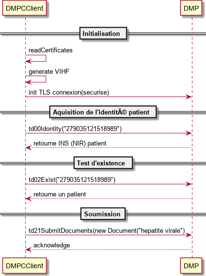

DMPC-API
La DMPC-API est une interface de programmation écrite en Java, fournissant une abstraction de haut niveau permettant l’exécution de l’ensemble des transactions définies dans le cahier des charges pour la DMP Compatibilité.
Elle facilite ainsi aux intégrateurs/éditeurs la mise en place des contraintes fortes imposées par l’ASIP Santé pour la DMP Compatibilité.
Ces contraintes sont de deux natures. La première, technique, est la mise en oeuvre de la sécurité dans le DMP. C’est à dire la gestion des authentifications et des autorisations, ainsi que le chiffrement des communications. La deuxième, fonctionnel, concerne le respect des différents standards internationaux imposés dans le cahier des charges : IHE, OASIS, HL7, W3C, ASIP Santé (Cadre d’intéropérabilité) …
Présentation générale
L’objectif de DEVCOOP est d’implémenter, de commercialiser et de promouvoir cette DMPC-API. La force de cette API est dans la simplicité de sa mise en oeuvre, mais aussi dans ses briques applicatives utilisées. En effet, la DMPC-API est une api Java dont tous les composants sont injectables dans un environnement SpringFramework. Ces composants sont tous basés sur des librairies de l’opensource comme Joda-time, Log4j, Apache Santuario, Apache CXF… .
- La DMPC-API est un projet github public : https://github.com/DEVCOOP/dmpc-public.
- L’apidoc courante du projet : https://devcoop.github.io/dmpc-public/apidocs/index.html
L’implémentation de la DMPC-API par DEVCOOP est par contre soumis à licence.
Pour une présentation commerciale de l’offre et obtenir le statut des différentes homologations obtenues, vous pouvez consulter la page de notre site www.devcoop.fr et pour plus d’information, vous pouvez nous contacter à l’adresse suivante dmp@devcoop.fr
Connecteur ou API embarquée
Embedded
Cette api peut être utilisée directement depuis une application java. Il suffit d’inclure les dépendances Maven adequats.
Exemple de code :
// Initialisation du point d'entrée exécutant l'ensemble des transactions vers le DMP
DMPCClient client = (DMPCClient)springContext.getBean("dmpcClient");
// Initialisation d'un PS auteur des différentes transactions
DMPCAuthor ps1 = new DMPCAuthor("1234", "Dupont", "Pierre");
ps1.setRole("Médecin");
ps1.setStructureNom("Clinique du beau Soleil");
// Test d'existence (recherche) d'un patient
DMPCPatient patient = client.td02Exist(new TD02Request("0404312364978044945679")).getPatient();
// Initialisation d'un document à soumettre au DMP
DMPCDocument document = new DMPCDocument();
document.setTitle("Titre du document concernant l'hépatite virale");
document.setContent("Contenu textuel");
document.addEvent(new DMPCCode("B18", "2.16.840.1.113883.6.3", "Hépatite virale chronique"));
document.setFormat(client.getCodesFor(DMPCCode.ASIPJeuxValeurs.FORMAT_CODE).get(1).getCode());
// …
// Création de l'enveloppe de soumission
DMPCSubmission submission = new DMPCSubmission();
submission.addDocument(document);
submission.setPatient(patient);
// Envoi vers le DMP de la soumission.
TD21Response td21Response = client.td21SubmitDocuments(context, new TD21Request(submission));
System.out.println("Soumission enregistré avec l'uuid :" + td21Response.getSubmission().getUuid());
Diagrammme de séquence correspondant

Proxy WS
Il est possible d’accéder à ce composant à partir d’un serveur Web Service lancé au préblable. La DMPC-API devient un serveur client vers le DMP accessible par Web Service.
Toute la documentation concernant ce mode d’accès se trouve ici.